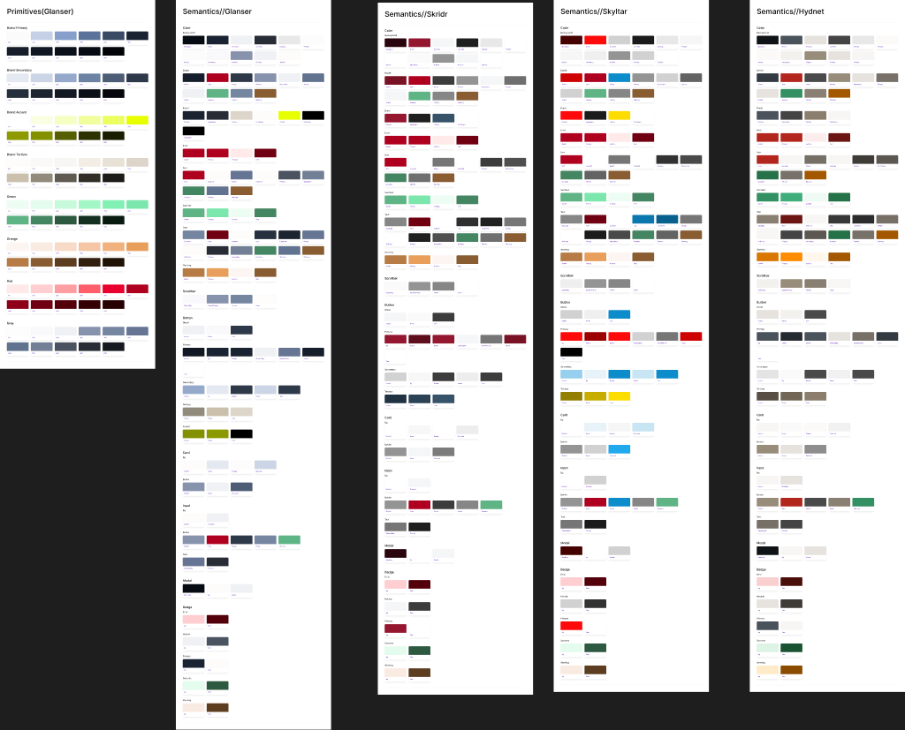
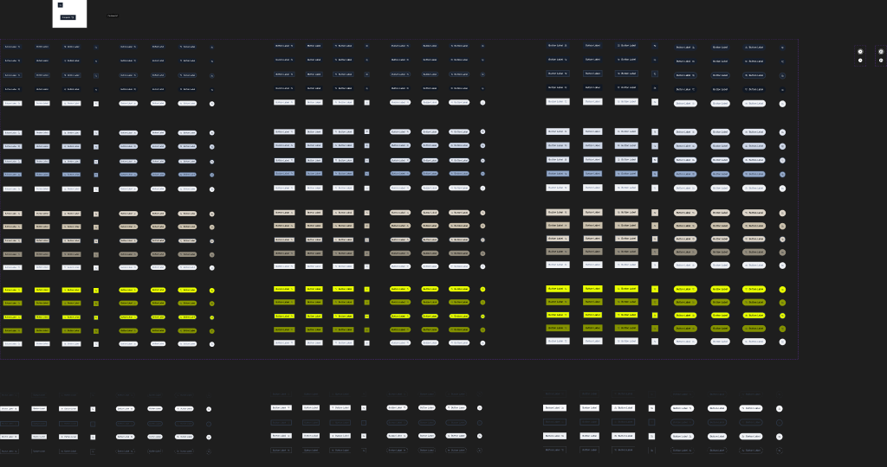
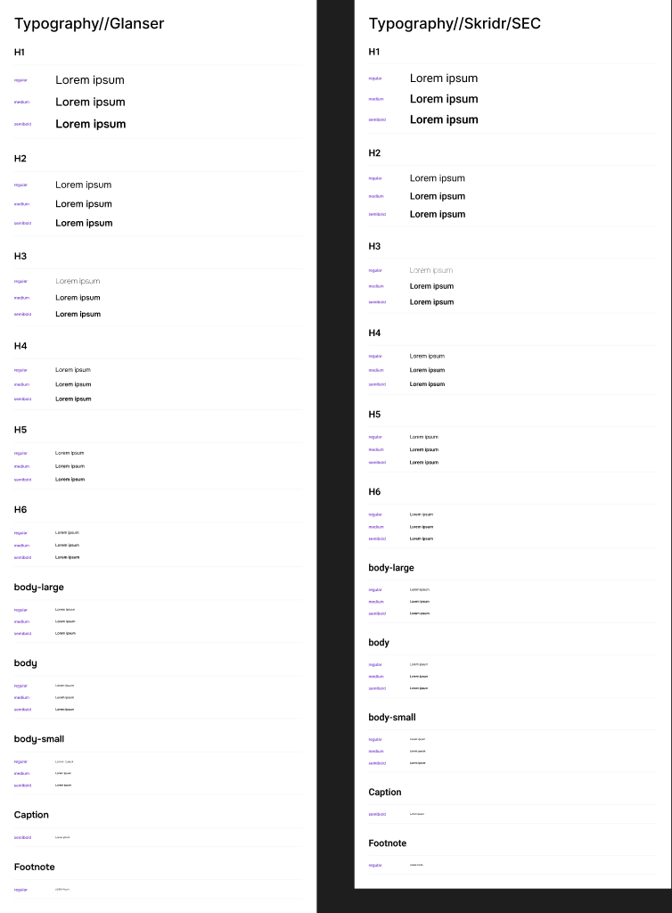

Glanser and Skridr
Colour and typography boards document how one token model can support multiple visual identities.
SaaS commerce / design systems / Lithium platform
A scalable design system for Glanser, built to turn the Lithium platform into a configurable foundation for B2B and B2C commerce brands.

Brief
Glanser is a SaaS platform for brands and businesses to host B2C and B2B commerce experiences on top of Lithium. The design system needed to support storefronts, customer portals, commerce journeys, authenticated states, and client-specific brand expression without rebuilding the interface for every new business.
My job was to create a foundation that gave the product team consistency and speed, while still giving client teams enough flexibility to create distinct branded experiences from the same underlying product logic.
The goal was not a static UI kit. It was a configurable product layer for multi-brand SaaS commerce.
System model
Colours, typography, radii, strokes, icons, and baseline scales for visual consistency.
Buttons, inputs, chips, avatar, search, navigation, tabs, and responsive states.
Cards, tables, carousels, breadcrumbs, modals, footers, product listings, and sections.
Checkout, delivery, payment, quote replies, dashboards, product documents, and portal flows.
Variables
The colour system uses a layered token model. Primitive brand scales such as primary, secondary, accent, tertiary, success, warning, error, and grey define the raw palette. Semantic tokens such as background, border, icon, text, brand, and modal roles define how the palette should behave inside the product. Component tokens then localize that behavior into buttons, cards, inputs, badges, and modals.
This separation makes the system scalable: brand values can change, but interface roles stay stable. A new client brand can inherit the same product components while remapping the variables that control expression.
The file includes primitive brand scales, semantic colour groups, and component-level tokens for buttons, cards, inputs, modals, badges, and scrollbars.
Modes
The design system uses mode-based thinking at several layers. Typography and colour documentation include Glanser and Skridr/SEC examples. Navigation supports consumer and business-oriented modes, logged-in and logged-out states, desktop and mobile layouts, expanded menus, and search states. Search components also separate logged-in and logged-out behavior.
Colour and typography boards document how one token model can support multiple visual identities.
Search and navigation adapt to different user states without duplicating the whole system.
Navigation includes separate consumer and business-oriented modes for different commerce contexts.
Navigation, carousel, footer, and page components include mobile-specific variants and layouts.
Component depth
Buttons are the clearest proof of the system's maturity. The library includes hundreds of button variants across colour, state, size, pill shape, and icon behavior. That gives designers and product teams a predictable model for primary actions, secondary actions, icon-only controls, disabled states, hover/focus states, and dense commerce UI.


Audit evidence
Product patterns
The higher layers of the library include product cards, category listings, search, navigation states, shopping cart templates, checkout summary, delivery templates, shipping templates, payment templates, payment confirmation, product documents, quote replies, profile dashboards, order management tables, wishlists, quick search, login, signup, mini cart, and organization selection.
Scalability
The system scales in three ways. It scales across brands because primitive palettes can be remapped while semantic roles remain stable. It scales across product modes because components account for auth, business model, responsive layout, interaction state, and content density. It scales across product depth because the library covers foundations, controls, layouts, commerce modules, and full product workflows.
This is what makes the library useful as a foundation for custom client prototypes: the identity can shift, but the interaction model and product architecture stay intact.
Outcome
The Glanser design system gave the product team a scalable way to design, prototype, and extend Lithium-based commerce products. It reduced repeated design decisions, improved consistency across B2B and B2C workflows, and created a foundation that can grow with new clients, new brands, and new product surfaces.
The strongest proof of the system is reuse: one foundation, many branded commerce experiences.